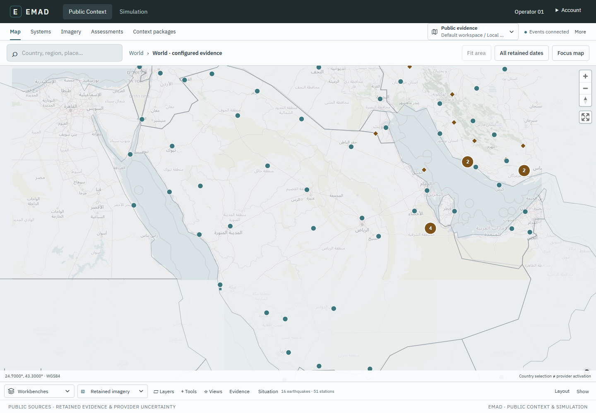

The map opens with room to explore
The 44px toolbar keeps workspaces, layers, tools, views, evidence and situation controls available. Counts and refresh actions open in a temporary disclosure.
Browse in a shallow tray
Desktop previews take 124px. Choosing a record or detailed workspace opens the appropriate panel. Hiding the panel returns its space to the map.
Work beside the geography
Automatic layout uses a side panel for detailed desktop work and short landscape screens. Layout also offers explicit side, bottom, expanded and maximized views.
Keep the existing capabilities
Systems retains all six domains, Sources & access and Processing. Detailed forms adapt to their actual panel width; drafts remain mounted during temporary map controls.